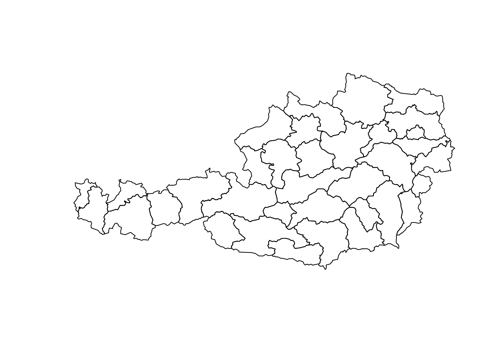
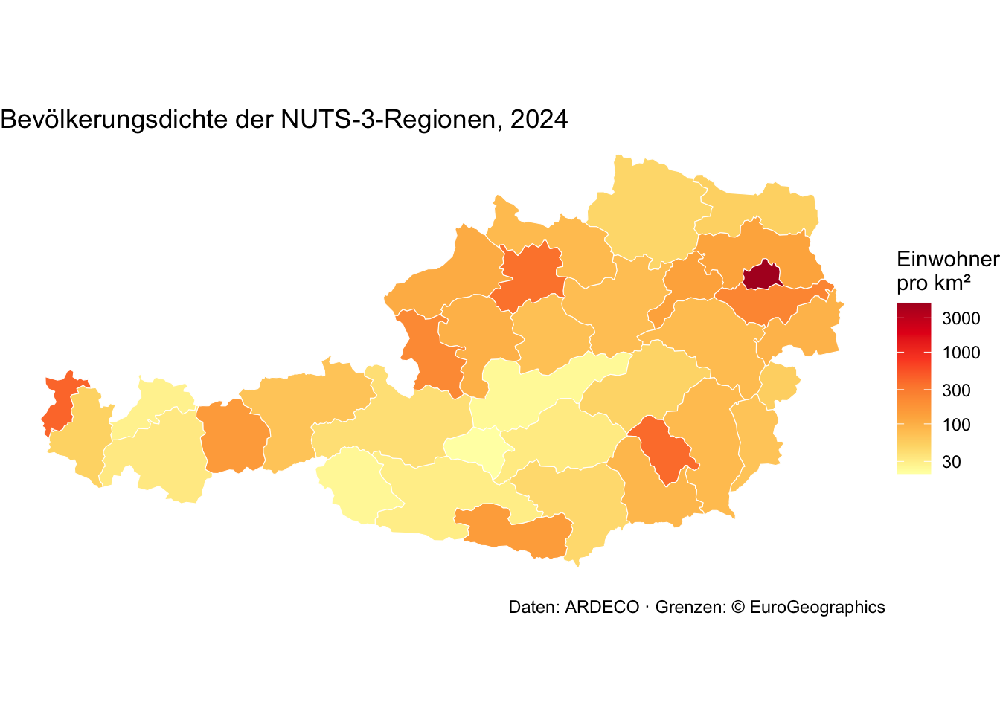
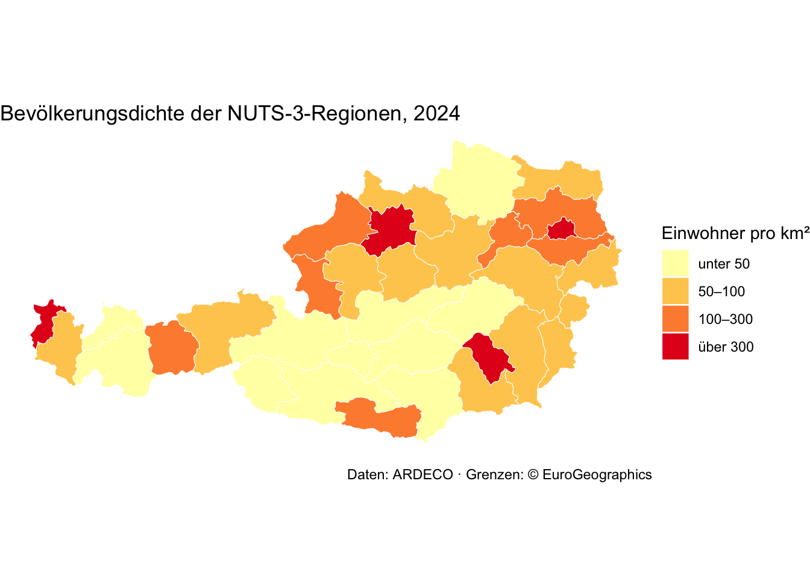

library(sf) # Geodaten
library(dplyr) # Daten bearbeiten
library(ggplot2) # Grafiken und KartenEinheit 6 (optional): Ergebnisse auf der Karte
Diese Einheit ist optional. Sie zeigt in Kürze, wie man Ergebnisse für Regionen auf einer Karte darstellt — zum Beispiel die Bevölkerungsentwicklung aus Übungsaufgabe 1. Neu ist dabei eigentlich nur ein Paket: sf (simple features). Alles andere — filter(), left_join(), ggplot() — kennst du schon.
Einmalig in der Console installieren: install.packages("sf").
Teil 1: Vektordaten
Vektordaten beschreiben Objekte über ihre Koordinaten. Es gibt drei Grundtypen:
- Punkte — ein Koordinatenpaar (x, y), z. B. Luftgüte-Messstationen
- Linien — eine Folge von Punkten, z. B. Straßen, Flüsse
- Flächen (Polygone) — eine geschlossene Linie, z. B. Gemeinden, Bezirke, Regionen
Zu jeder Geometrie gehören Attribute — Eigenschaften wie Name oder Einwohnerzahl, in Tabellenform. Besteht ein Objekt aus mehreren Teilen (eine Region mit einer Exklave), spricht man von Multi-Geometrien, z. B. MULTIPOLYGON.
In R ist ein Geodatensatz deshalb ein ganz normaler Data Frame: die Attribute als Spalten, dazu eine Spalte geometry mit der Form jeder Zeile. filter(), select() und left_join() funktionieren wie gewohnt.
Teil 2: Geodaten einlesen
data/raw/nuts3_at.geojson enthält die Grenzen der 35 österreichischen NUTS-3-Regionen — dieselben Regionen wie in Übungsaufgabe 1. GeoJSON ist ein verbreitetes Textformat für Geodaten; st_read() liest es ebenso wie Shapefiles (.shp) oder GeoPackages (.gpkg):
regionen_geo <- st_read("data/raw/nuts3_at.geojson")Reading layer `nuts3_at' from data source
`/Users/mironova/Library/CloudStorage/OneDrive-TUWien/Dokumente/Teaching/R_course/RIntroduction/_website/data/raw/nuts3_at.geojson'
using driver `GeoJSON'
Simple feature collection with 35 features and 2 fields
Geometry type: MULTIPOLYGON
Dimension: XY
Bounding box: xmin: 9.530749 ymin: 46.37245 xmax: 17.1608 ymax: 49.01862
Geodetic CRS: WGS 84Quelle: © EuroGeographics für die Verwaltungsgrenzen; Eurostat GISCO, NUTS 2024, Maßstab 1:3 Mio.
Die Meldung verrät das Wichtigste: 35 Zeilen (features), 2 Spalten (fields), Flächen (MULTIPOLYGON) und das Koordinatensystem (WGS 84: Längen- und Breitengrade).
head(regionen_geo, 3)Simple feature collection with 3 features and 2 fields
Geometry type: MULTIPOLYGON
Dimension: XY
Bounding box: xmin: 15.99624 ymin: 46.8354 xmax: 17.1608 ymax: 48.11868
Geodetic CRS: WGS 84
nuts name geometry
1 AT111 Mittelburgenland MULTIPOLYGON (((16.37256 47...
2 AT112 Nordburgenland MULTIPOLYGON (((16.39121 47...
3 AT113 Südburgenland MULTIPOLYGON (((16.27984 47...Ein schneller Blick auf die Formen:
plot(st_geometry(regionen_geo))
Koordinatensystem
Längen- und Breitengrade liegen auf einer Kugel; auf einer flachen Karte wirkt Österreich damit leicht verzerrt. Für Österreich gibt es eine eigene Projektion, MGI / Austria Lambert (EPSG-Code 31287). st_transform() rechnet die Koordinaten um:
regionen_geo <- st_transform(regionen_geo, crs = 31287)Teil 3: Tabelle und Karte verbinden
Damit Zahlen auf die Karte kommen, brauchen Tabelle und Geodaten eine gemeinsame Spalte — hier den NUTS-Code. Als Beispiel nehmen wir die Einwohnerzahl 2024 aus den ARDECO-Daten von Einheit 4. select() kann dabei gleich umbenennen (neuer_name = alte_spalte):
bev_2024 <- read.csv("data/raw/ardeco_bevoelkerung.csv") %>%
filter(LEVEL_ID == 3, substr(TERRITORY_ID, 1, 2) == "AT") %>%
select(nuts = TERRITORY_ID, einwohner = X2024)
head(bev_2024, 3) nuts einwohner
1 AT111 37807
2 AT112 165658
3 AT113 98486Jetzt der Join. Die Geodaten stehen links — nur dann bleibt das Ergebnis ein Geodatensatz. st_area() berechnet die Fläche jeder Region (in m², deshalb / 1e6 für km²):
karte <- regionen_geo %>%
left_join(bev_2024, by = "nuts") %>%
mutate(flaeche_km2 = as.numeric(st_area(geometry)) / 1e6,
dichte = einwohner / flaeche_km2)
sum(is.na(karte$einwohner)) # 0: jede Region hat einen Wert[1] 0Teil 4: Karten mit ggplot2
geom_sf() zeichnet die Geometrie — x und y braucht es nicht. Die Zahl kommt wie gewohnt über aes(fill = ...) auf die Fläche. theme_void() blendet Achsen und Gitter aus:
ggplot(karte) +
geom_sf(aes(fill = dichte), color = "white", linewidth = 0.2) +
scale_fill_distiller(palette = "YlOrRd", direction = 1, transform = "log10",
name = "Einwohner\npro km²") +
labs(title = "Bevölkerungsdichte der NUTS-3-Regionen, 2024",
caption = "Daten: ARDECO · Grenzen: © EuroGeographics") +
theme_void()
Wien ist so dicht besiedelt, dass alle anderen Regionen sonst gleich hell wären. Die logarithmische Skala (transform = "log10") macht die Unterschiede sichtbar. Meldet R unused argument (transform = …), ist ggplot2 älter als Version 3.5 — dann entweder das Paket neu installieren oder trans = "log10" schreiben.
Oft leichter zu lesen sind Klassen — mit cut() aus Einheit 3:
karte <- karte %>%
mutate(dichte_klasse = cut(dichte,
breaks = c(0, 50, 100, 300, Inf),
labels = c("unter 50", "50–100", "100–300", "über 300")))
ggplot(karte) +
geom_sf(aes(fill = dichte_klasse), color = "white", linewidth = 0.2) +
scale_fill_brewer(palette = "YlOrRd", name = "Einwohner pro km²") +
labs(title = "Bevölkerungsdichte der NUTS-3-Regionen, 2024",
caption = "Daten: ARDECO · Grenzen: © EuroGeographics") +
theme_void()
Gespeichert wird wie jede andere Grafik mit ggsave().
Übung
- Welche drei Regionen sind am dünnsten besiedelt?
- Zeichne nur die Regionen Niederösterreichs (Codes beginnen mit
AT12; Tipp:substr()). - Zeichne eine Karte der Einwohnerzahl (
einwohner) statt der Dichte. Welche Karte ist aussagekräftiger — und warum?
# dein CodeTeil 5: Für Übungsaufgabe 1 (freiwillig)
Habt ihr in Übungsaufgabe 1 den Data Frame bilanz erstellt, kommt er genauso auf die Karte. Österreich insgesamt (AT) hat keine eigene Fläche in den Geodaten und fällt beim Join automatisch weg.
Für eine Größe, die positiv und negativ sein kann, passt eine Farbskala mit Mitte bei 0:
bilanz_karte <- regionen_geo %>%
left_join(bilanz, by = "nuts")
ggplot(bilanz_karte) +
geom_sf(aes(fill = veraenderung_pct), color = "grey60", linewidth = 0.2) + # graue Grenzen: Regionen um 0 % sind fast weiß
scale_fill_gradient2(low = "#b2182b", mid = "white", high = "#2166ac", midpoint = 0,
name = "Veränderung\nin %") +
labs(title = "Bevölkerungsveränderung 2000–2024") +
theme_void()Und für die vier Typen aus Schritt 5:
ggplot(bilanz_karte) +
geom_sf(aes(fill = typ), color = "white", linewidth = 0.2) +
scale_fill_brewer(palette = "Set2", name = NULL) +
labs(title = "Woher kommt das Wachstum?") +
theme_void()Weiterlesen
- Geocomputation with R — frei verfügbares Buch, der Standard für Geodaten in R
- Interaktive Karten zum Zoomen: Pakete
mapview(eine Zeile:mapview(karte)) undleaflet